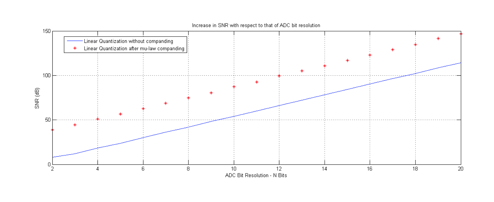

G.711 a-law 及 u-law 简要算法过程
G.711 a-law 及 u-law 简要算法过程
尊重原创，请勿转载!
最近课上在讲 a-law 以及 $\mu$-law 的压缩算法，查了下 wiki，英文版的资料算是比较全的了，国内的那xx百科相比之下简直跟没有一样。
其中 a-law 和 $\mu$-lau 的公式分别如下:
$\mu$-lau 公式如下:
$\mu$-law 给出 $\mu$ 值为255，a-law 中的A赋值为87,6
由于课上老师只是介绍了 $\mu$-law，在此简要说明一下算法。 公式中的 x 是输入信号取值为 0到1，需要把 x信号归一化，此处为除以 A（最大波峰值），y 为输出信号，具体算法可根据应为 wiki 给出的公式如上面所示，其中sgn(x)表示输入信号的符号（正值为1，负值为-1），matlab 可用sign函数代替，然后进行采样量化，比如8bit线性采样，最后通过下图逆运算就可以得到关于 x 的函数，从而算出通过 $\mu$-law 编码的文件。
至于有人不禁要问，为什么这么折腾来回算一下，其实是因为，此算法同样适用于非均匀分布函数，一般的线性采样只能用于均匀分布信号，并且 SNR(信噪比) 不会有太大的变化。
参考资料：
- Digital Signal Processing 2/Advanced Digital Signal Processing Lecture 3. Gerald Schuller, TU Ilmenau
- http://www.dspguide.com/ch22/5.htm
补充说明
最近复习看了篇文章，明白了一些，稍微补充一点知识:
一般来说语音信号是符合拉普拉斯分布的，当我们使用线性量化的时候则会造成一些不必要的量化等级的浪费（这里还得请高人解答，不知道为什么），于是我们就把信号先进行放大，使其的pdf分布发生改变，使pdf变得更加的均匀，然后再进行量化反转，从而得到最终的信号。如下图所示：
这样做的好处有两点：
- 提高的信噪比snr，如下图所示
- 降低了设备的需求，因为只是进行的一步简单的公式计算

蓝色表示的是直接量化后得到的信噪比snr，红点为通过companding（信号扩展压缩）后然后得到的snr，明显可知要好于未经过扩展的原信号。但是a-lau和u-lau却不适合pdf变化非常剧烈的信号，这时候则需要其它更加优秀的算法，比如说Lloyds-Max和LBG算法。
参考资料：
- Non-uniform Quantization: Companding , μ-Law and A-Law ；
- Aravindan Joseph Benjamin. Digital Signal Processing Research Laboratory Ilmenau University of Technology. P. O. Box 100565, D-98684 Ilmenau, Germany. Email: aravindan-joseph.benjamin（at）tu-ilmenau.de